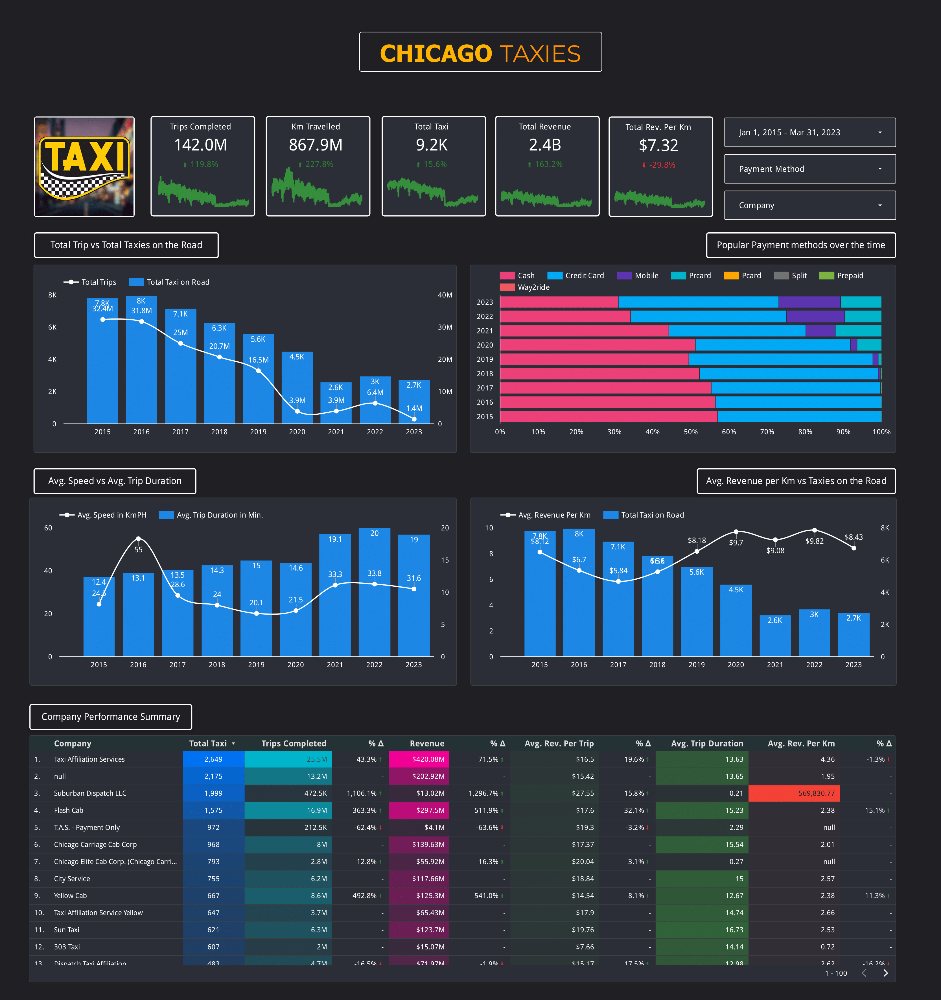
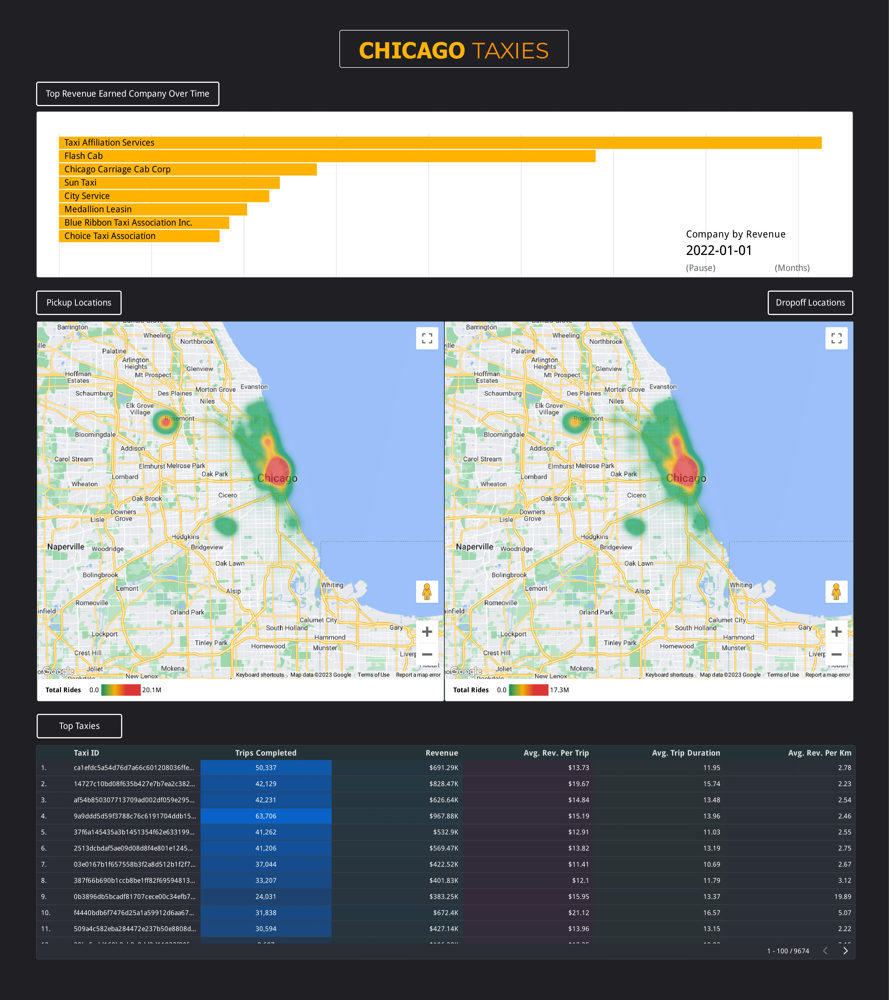

<div class="container">
                <div class="row mh-portfolio-modal-inner">
                    <div class="col-sm-5">
                        <h2>Chicago Taxi Trips</h2>
                        <p>The BigQuery dataset titled "Chicago Taxi Trip" comprises a vast collection of data
                            pertaining to taxi rides taken within the city of Chicago, Illinois.
                            Encompassing a timeframe of January 1, 2013, to April 23, 2023, this dataset encompasses
                            over 200 million taxi trips. It encompasses crucial details
                            including the pickup and drop-off locations, distances traveled, fares, payment methods, and
                            timestamps. <br><br>

                            This dataset is conveniently hosted on Google Cloud's BigQuery platform, empowering users to
                            efficiently query and analyze extensive datasets using SQL.
                            It is freely accessible and available for utilization across diverse domains such as
                            transportation analysis, urban planning, and machine learning applications.<br><br>

                            The project involved creating a dashboard using Looker Studio and Google BigQuery to
                            visualize key summary points and insights from the dataset.
                            The integration of Looker Studio's data visualization capabilities and Google BigQuery's
                            querying and analysis functionalities enabled the creation of interactive
                            visualizations, such as charts, graphs, and maps, to provide a comprehensive view of the
                            data. This empowered stakeholders to make data-driven decisions, identify trends,
                            and derive actionable insights. Overall, the project successfully utilized Looker Studio and
                            Google BigQuery to create a powerful dashboard for efficient data analysis and
                            visualization.

                        </p>
                        <div class="mh-about-tag">
                            <ul>
                                <li><span>Google BigQuery</span></li>
                                <li><span>SQL</span></li>
                                <li><span>Looker Studio</span></li>
                            </ul>
                        </div>
                        <a href="https://lookerstudio.google.com/reporting/0aa2ad05-df22-4851-b5a4-f9b69d8a5f5e"
                            target="_blank" rel="noopener noreferrer" class="btn btn-fill">Source: Looker Studio <span class="icon-external-link" aria-hidden="true"></span></a>
                    </div>
                    <div class="col-sm-7">
                        <div class="mh-portfolio-modal-img">
                            
                            
                        </div>
                    </div>
                </div>
            </div>
